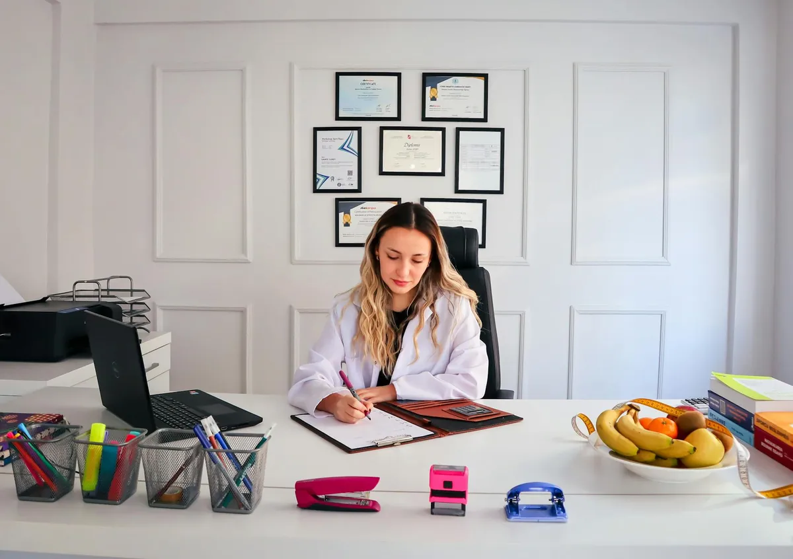
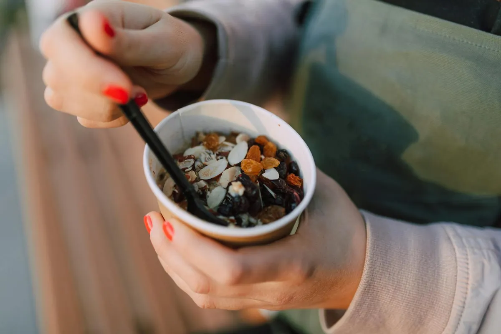

Sedentary Life? Simple Stretches for Better Mobility

Key takeaways
- I remember staring at my computer screen, feeling that familiar ache creep into my lower back and shoulders.
- It was 3 PM, and I hadn't moved from my desk in hours.
- Focus on: Desk-Friendly Stretches to Reclaim Your Movement.
I remember staring at my computer screen, feeling that familiar ache creep into my lower back and shoulders. It was 3 PM, and I hadn't moved from my desk in hours. Sound familiar? This sedentary life, while often necessary for work, can really take a toll on our bodies, leaving us feeling stiff, achy, and just plain stuck.
For years, I thought the only solution was a full-blown gym session or a dedicated yoga class. But honestly, who has the time or energy for that every single day? The truth is, you don't need a lot of time or a fancy studio to make a big difference. Just a few minutes here and there can unlock so much more ease in your body.
Let's talk about what actually helps. It's about gentle, consistent movement that targets the areas most affected by sitting: your hips, spine, shoulders, and neck. These simple stretches can be done right at your desk or with minimal space.
Desk-Friendly Stretches to Reclaim Your Movement
Try incorporating these into your workday. You'll be amazed at how much better you feel.
1. Seated Spinal Twist
This is fantastic for waking up your spine. Sit tall in your chair, feet flat on the floor. Inhale, and as you exhale, gently twist your torso to the right, using your chair for support. Hold for a few breaths, then repeat on the other side.
2. Hip Flexor Stretch (Standing)
Tight hips are a huge issue for desk workers. Stand up and step one foot forward, bending your front knee. Gently push your hips forward until you feel a stretch in the back of your hip. Hold for 20-30 seconds, then switch legs.
3. Shoulder Rolls and Neck Tilts
These are super simple but so effective. Roll your shoulders forward 10 times, then backward 10 times. Then, gently tilt your head towards your right shoulder, hold, and repeat on the left. You can also gently tuck your chin to your chest.
4. Cat-Cow Stretch (Seated or Standing)
If you can stand or have a chair that allows it, mimic this yoga pose. On an inhale, arch your back and lift your chest (Cow). On an exhale, round your spine and tuck your chin (Cat). This mobilizes your entire spine.
5. Wrist and Forearm Stretch
Our wrists get a workout typing! Extend one arm straight out, palm facing up. Gently use your other hand to pull your fingers back towards your body. Hold, then flip your palm down and gently pull your fingers down. Repeat on the other arm.
The 2-Minute Win
Right now, take 60 seconds to do a seated spinal twist in both directions, followed by 30 seconds of shoulder rolls. You've already started!
My biggest breakthrough came when I stopped aiming for perfection and started aiming for consistency. Even a 5-minute stretch session is a win! Don't underestimate the power of small, regular movements.
Making these stretches a habit is key. I found that setting reminders on my phone really helped me stay on track. It’s not about being perfect, but about showing up for your body regularly. Check out this related healthy tip for more ideas on building habits.
Remember, consistency is more important than intensity. These aren't meant to be grueling workouts; they're gentle ways to care for your body throughout the day. For a another practical guide on integrating movement, take a look.
Listen to your body. If something feels painful, ease off. The goal is to feel better, not to push through discomfort. This is a journey towards similar wellness insight, and it’s okay to take it slow.
Don't get discouraged if you miss a day. Just get back to it the next. Consistency is your superpower for long-term health. This stay consistent with this section might offer more encouragement.
Ready to explore more ways to feel good? You can explore more health guides.
Educational only — not medical advice.
More in healthy-habits

healthy-habitsFeel Fuller, Move More: High-Protein Breakfasts for Your Active Life
Discover delicious and satiating high-protein breakfast ideas designed for active lifestyles. Learn how to fuel your day
Read article →How to Stabilize Blood Sugar for All-Day Energy
Tired of energy crashes? Learn how to balance your blood sugar for sustained energy throughout the day with practical ti
Read article →Related posts
Feel Fuller, Move More: High-Protein Breakfasts for Your Active Life
Discover delicious and satiating high-protein breakfast ideas designed for active lifestyles. Learn how to fuel your day
Read article →How to Stabilize Blood Sugar for All-Day Energy
Tired of energy crashes? Learn how to balance your blood sugar for sustained energy throughout the day with practical ti
Read article → healthy-habits
healthy-habitsHow to Eat Mindfully for Lasting Weight Management
Discover sustainable calorie awareness without restriction. Learn mindful eating techniques for long-term weight managem
Read article →